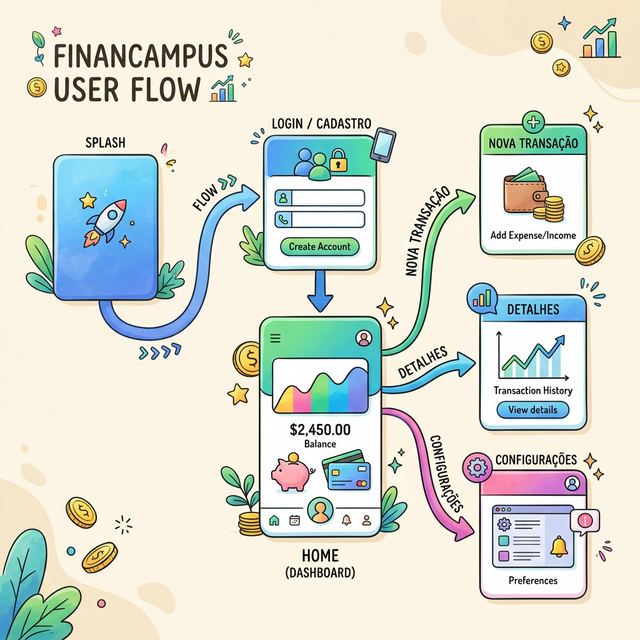

Estudo de Caso 7 — Mapeamento e Navegação
Objetivo da Semana
Desenvolver uma visão arquitetural de todas as telas (Mapeamento e Diagrama de Navegação). Posteriormente colocar o Read do CRUD para funcionar, consumindo e listando os dados cadastrados em suas respectivas listagens pela ferramenta visual no FlutterFlow.
Passo a Passo da Atividade
Mapeiem quais são as telas existentes no sistema e classifique-as (Ex: Listagem, Autenticação, Detalhe/Edição, Criação). Faça uma tabela resumo.
Com ajuda dos botões do FlutterFlow e de suas intenções (UX/UI), faça um fluxograma. Deve ficar bem evidente para onde cada clique num botão chave leva o usuário. Use losangos para decisões (O usuário está logado?), entre outras técnicas.
Exemplo de Prompt: "Como Especialista em UX/UI Mobile, sugira a arquitetura de navegação (quais itens vão na Bottom Navigation Bar, e quais ficam ocultos num Drawer) para meu aplicativo..."
Configure os componentes ListView/GridView em suas páginas para carregar coleções reais, configurando Queries e mapeando Variáveis na tela para visualização (Por exemplo: Puxando da Collection transacoes e mapeando as informações nos Cards).
Anexe ao Documento a Listagem da Tabela, o Wireframe Visual e um Print/Foto do StoryBoard das Telas ativas validadas no FlutterFlow.
Para concluir as atividades desta semana, reúna todas as informações e artefatos gerados nos passos anteriores e preencha o template oficial de entrega. Faça uma cópia do documento para a sua conta Google e compartilhe-o com o professor.
Acessar Template: Arquitetura Visual: Mapa de Telas e Navegação
📱 Estudo de Caso: FinanCampus
Veja o mapeamento completo de telas que o grupo do FinanCampus elaborou nesta semana.

Mapa de telas — FinanCampus (11 telas):
- Autenticação: Splash | Login | Cadastro | Recuperar Senha
- Principal (Bottom Nav — 4 abas): Home/Dashboard | Lista de Transações | Nova Transação | Configurações
- Detalhes/Edição: Detalhe da Transação | Editar Transação
Diagrama de navegação criado no Whimsical. Fluxo principal: Splash → [usuário logado?] → sim: Home / não: Login → Home. A partir do Home, o usuário acessa as 4 abas pelo Bottom Navigation Bar. O botão flutuante (+) no Home navega diretamente para Nova Transação. Toque em um item da lista navega para Detalhe da Transação, que dá acesso a Editar Transação pelo botão de edição.
Lista dinâmica implementada na tela "Lista de Transações":
widget ListView com Backend Query no Firestore,
filtrado por usuario_uid = currentUserUid, ordenado por
data DESC, limite de 50 registros. Cada item exibe um
widget Card com Row contendo: ícone da categoria,
descrição, valor e data — todos vinculados via Set from Variable
ao resultado da query.